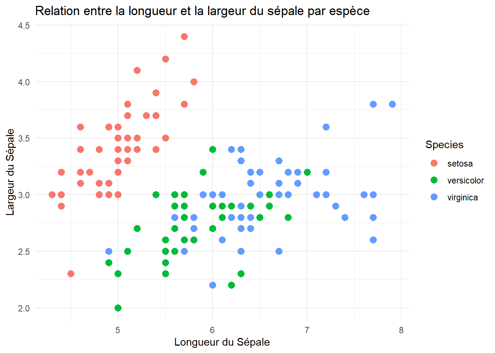
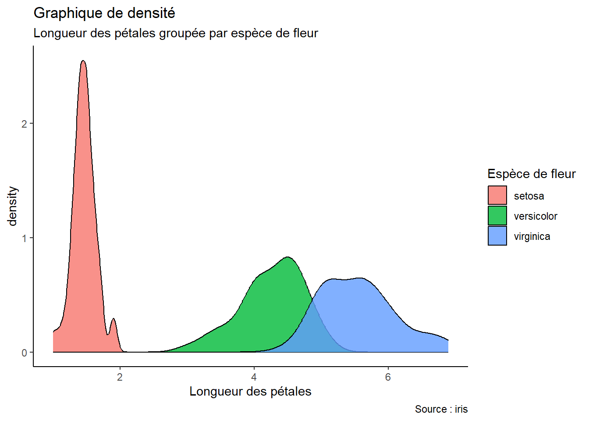
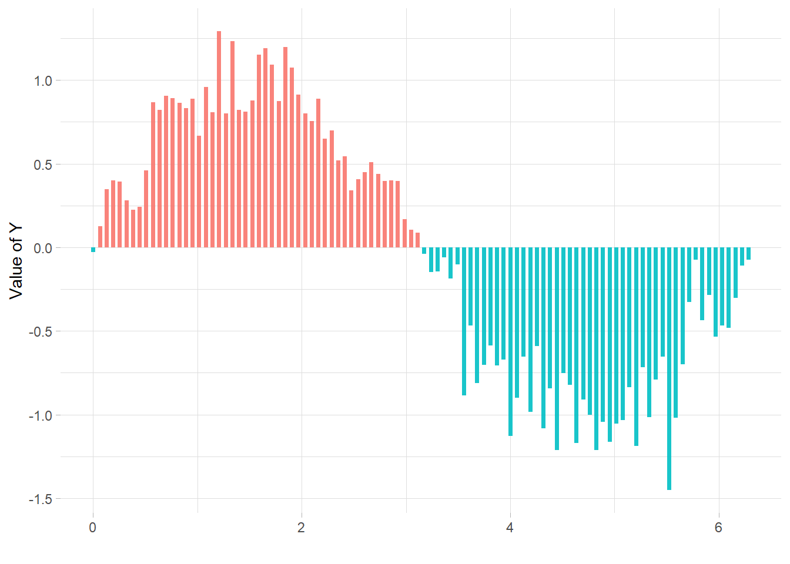

# Le chunk est un espace est réservé au code. Ici, je dois donc à nouveau précéder
# mes commentaires d'un #.
# Charger le jeu de données 'iris' intégré à R
data(iris)Formation R - Module 3 : Rmarkdown
I) Introduction
1) Qu’est ce que “R markdown” ?
R Markdown est un outil puissant pour la création de documents dynamiques qui combinent du texte formaté avec des analyses de données en utilisant le langage de programmation R. Il possède une syntaxe de formatage simple pour la rédaction de documents HTML, PDF et Microsoft Word. Pour plus de détails sur l’utilisation de R Markdown, consultez http://rmarkdown.rstudio.com.
En fait, vous verrez que Markdown vous permettra de réaliser des scripts plus beaux, mieux ordonnés, et dans lesquels vos idées, vos commentaires et votre code ne feront qu’un. Ce genre de script faciliteront ENORMEMENT le travail de vos relecteurs, mais également le vôtre !
Dans ce tutoriel, nous allons explorer les fonctionnalités de base de R Markdown en créant un document pas à pas.
PS: Ce document provient d’un R markdown !
II) Création d’un document R markdown
- Lancez RStudio.
- Sélectionnez File (Fichier) > New File (Nouveau fichier) > R Markdown… dans la barre de menu.
- Choisissez un titre pour votre document et un auteur.
- Sélectionnez le format de sortie, par exemple, HTML, PDF ou Microsoft Word (Je préconise HTML par défaut).
- Cliquez sur le bouton OK.
III) Essayons de créer du contenu
1) Les chunks
Dans R markdownk, les commentaires n’ont pas besoin d’être précédés d’un #. En fait, c’est plutôt l’inverse, car c’est le code qui devra être encapsulé dans ce qu’on appelle des “chunks”.
Insérons un chunk avec le raccourci ctrl + alt + i , ou alors avec le bouton vert ci-dessus à droite.
Notez que le chunk démarre par un {r}. Nous codons en R ! Remplacez ce {r} par {SQL}, et vous pourrez lancer une requête SQL depuis le même script ! Pas mal non ?
2) Intégrer des graphiques
Maintenant, explorons ce jeu de données :

Notez que le paramètre ‘echo = FALSE’ a été ajouté au chunk pour empêcher l’affichage du code R qui a généré le graphique. Ainsi, dans le script, on aura seulement le graphique. Faites la même chose pour les autres chunks que vous ne voulez pas afficher !
Voilà ce que ça donne si on affiche le code :
library(ggplot2)
theme_set(theme_classic())
# Plot
g <- ggplot(iris, aes(Petal.Length))
g + geom_density(aes(fill=factor(Species)), alpha=0.8) +
labs(title="Graphique de densité",
subtitle="Longueur des pétales groupée par espèce de fleur",
caption="Source : iris",
x="Longueur des pétales",
fill="Espèce de fleur")
Ou encore :
# Créer la donnée
x <- seq(0, 2*pi, length.out=100)
data <- data.frame(
x=x,
y=sin(x) + rnorm(100, sd=0.2)
)
# Ajouter une colonne avec un condition pour choisir la couleur
data <- data %>%
mutate(mycolor = ifelse(y>0, "type1", "type2"))
# plot
ggplot(data, aes(x=x, y=y)) +
geom_segment( aes(x=x, xend=x, y=0, yend=y, color=mycolor), size=1.3, alpha=0.9) +
theme_light() +
theme(
legend.position = "none",
panel.border = element_blank(),
) +
xlab("") +
ylab("Value of Y")Warning: Using `size` aesthetic for lines was deprecated in ggplot2 3.4.0.
ℹ Please use `linewidth` instead.
Ce chunk est long ! Vous pouvez exécuter l’ensemble du code contenu dans un chunk à l’aide du raccourci clavier Ctrl+Entrée
3) Quelques astuces de formatage.
ITALIQUE : Je peux mettre mon texte en italique en l’entourant de une seule étoile * Texte à afficher en italique * (sans les espaces).
GRAS : Je peux mettre mon texte en gras en l’entourant de deux étoiles ** Texte à afficher en gras ** (sans les espaces).
Saut de ligne : Je peux insérer un saut à la ligne avec la balise <br>.
III) Exporter son script
1) L’export, pour quoi faire ?
La magie de R markdown, c’est l’export ! En exportant votre script (comme je l’ai fait ici), vous obtenez un PDF qu’il sera facile de partager avec les collègues. Vous pourrez leur afficher des figures, des tableaux, etc.
Si des modifications doivent être faites, pas besoin d’exporter une figure, la copier dans word, etc. Vous avez juste à venir changer votre ligne de code dans le script et retricoter !
2) Problèmes techniques fréquents lors de l’export
Pour exporter au format PDF vous aurez besoin de :
LaTeX (un langage et un système de composition de documents qui permet d’avoir des rendus super propres) Normalement, TexWorks (MikTeX) est installé sur votre poste. Sinon, ouvrez un ticket.
Le package “tinytex” (Normalement installé, sinon ticket)
Avec une nouvelle installation de MiKTeX, de nombreux fichiers de style nécessaires pour “KNIT” (tricoter) un fichier RMarkdown en PDF ne sont pas installés. Pour permettre à MiKTeX de les installer automatiquement, ouvrez la console MiKTeX et allez dans l’onglet Paramètres (settings).
Il y a une option qui dit “You can choose whether missing packages are to be installed automatically (on-the-fly)”. Assurez-vous !que cette option est réglée sur “Always” pour permettre l’installation des fichiers de style nécessaires.
3) Personnaliser son export
La personnalisation du document généré peut être réalisée en ajustant les options dans le préambule du document. Cependant, RStudio propose également une interface graphique simplifiée pour modifier ces options.
Pour y accéder, cliquez sur l’icône en forme d’engrenage située à droite du bouton “Knit” et sélectionnez “Output Options…” dans le menu déroulant.
Personnellement, j’aime ajouter une table des matières.
4) Exportons
Dans R studio, cliquez simplement sur la flèche noire à droite du bouton “Knit” ci-dessus (la pelotte de laine!). Choisissez le format (essayons un PDF).
Voilà, vous n’avez plus qu’à admirer votre document :)
J’espère que ce tutoriel vous auras été utile.
Bon code !